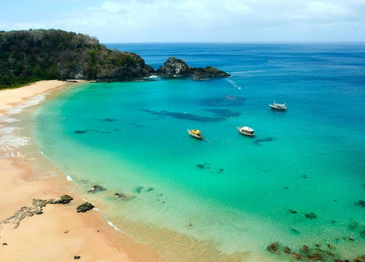
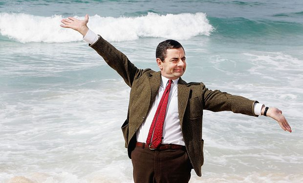

Baia do Sancho
Ubicada en Brasil, es una delicia para cualquiera que desfrute del ecosistema marino.
De difícil acceso, para disfrutar de esta playa –con agua cálida y sin olas– hay que bajar por unas escaleras metálicas y 50 metros de acantilados de piedra o llegar en una embarcación. Pero nadie se arrepintió una vez que sus pies se hundieron en la arena o el cuerpo comenzó a flotar en el agua, donde se ven peces de colores, delfines y tortugas sin ningún esfuerzo. La Bahía de Sancho está situada en el archipiélago de Fernando de Noronha. Son 21 islas de origen volcánico, de las cuales sólo la más grande está habitada. Si bien el destino pertenece al estado de Pernambuco y presenta la impronta del Nordeste de Brasil, Noronha queda en el medio del océano Atlántico, a 545 km de Recife y 360 km de Natal, desde donde arriban los vuelos de cabotaje (duran menos de una hora). No muchos lo saben, pero éste es un Parque Nacional Marino. Por eso, lo primero que tienen que hacer todos los viajeros al llegar al pequeño aeropuerto es pagar una tasa de preservación ambiental diaria que ronda los 50 reales (asciende a medida que se extiende la estadía en el lugar), destinada al mantenimiento de las condiciones ambientales y ecológicas. También se puede pagar por Internet con antelación, pero hay que llevar el comprobante. Además, no es un viaje que se pueda improvisar, ya que la isla admite solamente a 420 visitantes por día para evitar la sobreexplotación turística. A escasos 4 grados debajo de la Línea del Ecuador y a 2.800 km del continente africano, es una de las mecas mundiales del buceo y el snorkel por la gran visibilidad y la variedad de la fauna marina.
Aguas Tranquilas.

Paisaje Hermoso.
Playas cristalinas.
Perfecto para el Buceo.
Bean tomando una foto a Peter y Maria.
| País | Brasil |
|---|---|
| Continente | América(SudAmerica) |
| Población País | 200 millones de habitantes |
| Costo | Entre 5-6 millones por persona |
| Detalles | Junto con Atol das Rocas y Abrolhos, es considerado uno de los mejores puntos de buceo de Brasil, por lo que muchos ecoturistas viajan al archipiélago exclusivamente para bucear. Hasta hace 15 años la infraestructura para el turismo era muy básica, consistente en posadas familiares, y pocos restaurantes; pero en los últimos años han mejorado mucho sus servicios y han surgido nuevas posadas para turistas más exigentes. Sin embargo, los turistas que van a "Noronha" (como es comúnmente llamado) no buscan centros nocturnos ni grandes hoteles, sino que están dispuestos a tener un poco de incomodidades con tal de disfrutar de la naturaleza única del archipiélago, comparable a bucear en el Mar Caribe o las Islas Maldivas. |
-

Peter,Bélgica
Yo viajo sólo y me encanta el ecoturismo, baia es sin lugar a duda un lugar perfecto para bucear, puedes ver peces de todos los colores nadando a tu alrededor, llegar es un poco dificil pero no hay problemas. -

María,España
Divinoooo, fuí con mis sobrinos pancho y pancha y pudimos observar una gran cantidad de animales en su ecosistema, este es sin lugar a dudas un gran viaje para aquellos que usquen tranquilidad y estar con niños. -

Bean,Inglaterra
Horrible el lugar, hay que caminar mucho para llegar, cuando llegas sólo vez unos cuantos veces a tu alrededor, no me gustan los animales así que perdí mi dinero.